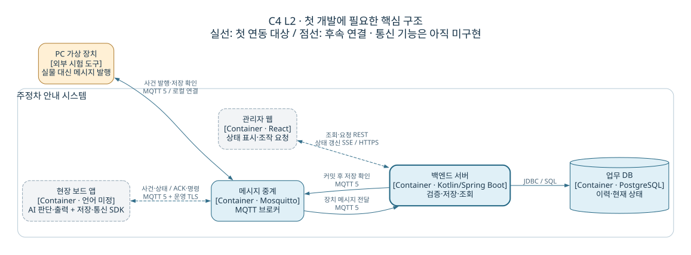

팀이 먼저 알아야 할 구조
제품 기준 v1.43 · 시작 자료 v0.2 · 2026-11-11
1. 무엇을 만들고, 지금 어디까지 하나요?
현장 보드가 차량의 정차를 판단해 LED·음성으로 안내하고, 관리자는 웹에서 상태와 이력을 확인하는 시스템입니다. 한 모의 구역·한 차량으로 시작하며 법적 단속·과태료 부과는 하지 않습니다.
지금의 목표는 실제 보드 대신 PC가 보낸 차량 상태를 서버에서 받아 저장하고 조회하는 것입니다. DB 초기 마이그레이션과 정식 사건 검증·등록 조회 테스트, 로컬 브로커 수신을 확인했습니다. 추가 의미 검사와 사건 저장·중복/역순 처리·커밋 후 ACK 코드 및 PostgreSQL 자동 시험을 마쳤습니다. 정상 1건의 실제 MQTT 왕복과 동일 메시지 재전송의 DUPLICATE 수신도 확인했습니다. 다음은 추가 수신 시험과 조회 API입니다. 기능별 실제 진행 상황은 현재 상태를 봅니다.
2. 각 부분은 어떻게 연결되나요?

그림을 크게 열기 ↗브로커는 메시지를 중계하는 프로그램입니다. 보드는 현장 판단을, 서버는 받은 정보의 저장·조회를 맡습니다. 프론트는 서버 API를 사용하며 보드에 직접 연결하지 않습니다. 그림의 실선도 구현 완료를 뜻하지 않습니다.
| 담당 | 맡을 일 | 다른 담당에게 전달할 것 |
|---|---|---|
| Data | 영상·정답·평가 입력 준비 | AI에게 영상과 정답 파일 |
| AI | 차량 판단·실물 보드·출력 | 보드 환경 정보, SDK에 전달할 상태 |
| 백엔드 | 장치 SDK·가상 장치·서버·저장 | AI에게 SDK, 프론트에게 API·상태 |
| 프론트 | 관리자 화면 | API 요청, 상태·결과를 구분하는 화면 |
C4의 컨테이너는 앱 또는 저장소를 뜻하며 Docker 컨테이너와는 다릅니다. 사진 저장·장치 로컬 저장 같은 후속 세부는 이 그림에서 생략했습니다. 필요할 때 사용자 관계 그림이나 서버 내부 설명을 확인합니다.

3. 메시지 한 건은 어떻게 처리되나요?
| 순서 | 처리 |
|---|---|
| 1 | 가상 장치가 기존 계약 형식으로 사건 메시지를 발행합니다. |
| 2 | MQTT 브로커가 구독 중인 백엔드로 전달합니다. |
| 3 | 백엔드가 메시지를 검증하고, 중복·순서를 확인해 DB에 저장합니다. |
| 4 | DB 커밋 후 장치에 저장 결과를 회신합니다. 브로커의 수신 확인과는 다릅니다. |
| 5 | 조회 API로 해당 구역의 상태를 확인합니다. 화면 자동 갱신은 이후에 붙입니다. |
같은 메시지가 두 번 와도 이력을 중복 생성하지 않고, 오래된 메시지가 뒤늦게 와도 현재 상태를 되돌리지 않아야 합니다. 구현 순서와 시험은 첫 기능 작업표에 있습니다.
4. 지금 유지할 결정은 무엇인가요?
- 백엔드는 Kotlin + Spring Boot 서버 하나로 만듭니다. 수신·업무 처리·저장·조회는 코드 안에서 책임을 나눕니다.
- 실물과 가상 장치는 같은 계약을 사용합니다. 필드·API를 새로 축약하지 않고 기존 계약을 따릅니다.
- 서버가 정차 여부를 다시 판단하지 않습니다. AI의 판단과 장치 제어는 현장 보드가 담당합니다.
- 문서와 코드를 한 GitHub 저장소에서 관리하는 것을 기본안으로 합니다. 변경은 브랜치와 PR로 확인합니다. 개인 비공개 parking-system에서 관리합니다.
5. 각자 어디서 시작하고, 무엇이 남았나요?
| 담당 | 바로 할 일 | 아직 확인할 것 |
|---|---|---|
| 백엔드 | 저장 모드에서 STORED·DUPLICATE 실습 → 조회 API | 추가 수신 시험·조회 권한 |
| AI | 보드 환경 조사·샘플 영상 추론 | 실제 OS·런타임·SDK 언어와 결합 방식 |
| Data | 소량 영상과 정답 작성 | 촬영 장소·카메라·자료 확보 조건 |
| 프론트 | 기존 응답 예제로 상태 화면 | 실제 API 연결은 백엔드 첫 기능 이후 |
보드 미결정 사항 때문에 서버·모의 화면 개발을 기다릴 필요는 없습니다. 사고·가림·재진입 등 정밀 동작은 v1.43에 남겨 두고 해당 기능을 구현할 때 확인합니다.